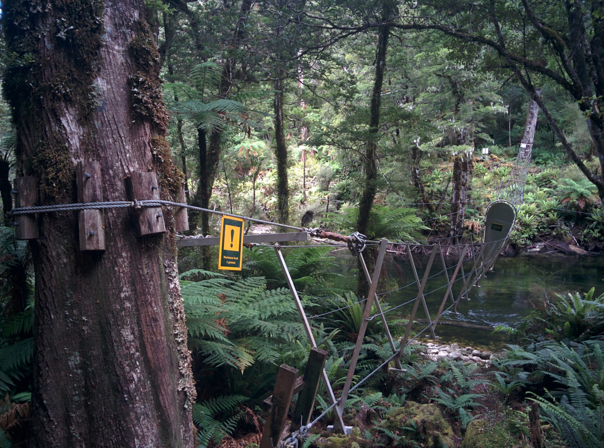

46th ICPC World Championship · Problem S
A group of walkers arrives at a river in the night. They want to cross a bridge, which can hold a limited number of walkers at a time. The walkers have just one torch, which needs to be used when crossing the bridge. Each walker takes a certain time to cross; a group crossing together must walk at the slowest walker’s pace. What is the shortest time it takes for all walkers to cross the bridge?

For example, Sample Input 1 assumes the bridge can hold 2 walkers at a time and there are 4 walkers with crossing times 1 minute, 2 minutes, 5 minutes and 10 minutes, respectively. The shortest time of 17 minutes can be achieved by the following sequence of crossings. First, the two fastest walkers cross in 2 minutes. Second, the fastest walker crosses back in 1 minute. Third, the two slowest walkers cross in 10 minutes. Fourth, the second-fastest walker crosses back in 2 minutes. Fifth, the two fastest walkers cross in 2 minutes.
The first line of input contains two integers n and c, where n (2 ≤ n ≤ 104) is the number of walkers, and c (2 ≤ c ≤ 104) is the number of walkers the bridge can hold at a time.
Then follows a line containing n integers t1, …, tn (1 ≤ ti ≤ 109 for all i). The ith walker takes time ti to cross.
Output the minimum total time it takes for the entire group to cross the bridge.
4 2 1 2 10 5
17
4 6 1 2 10 5
10